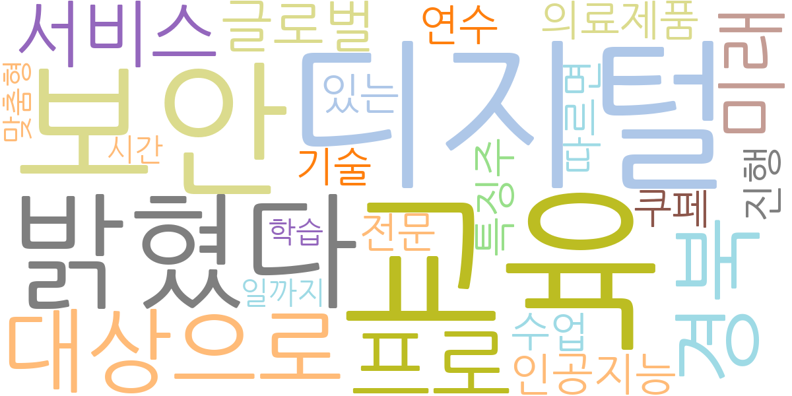
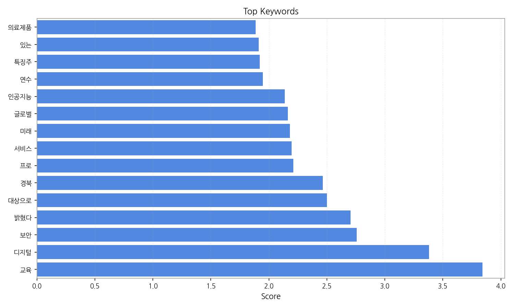
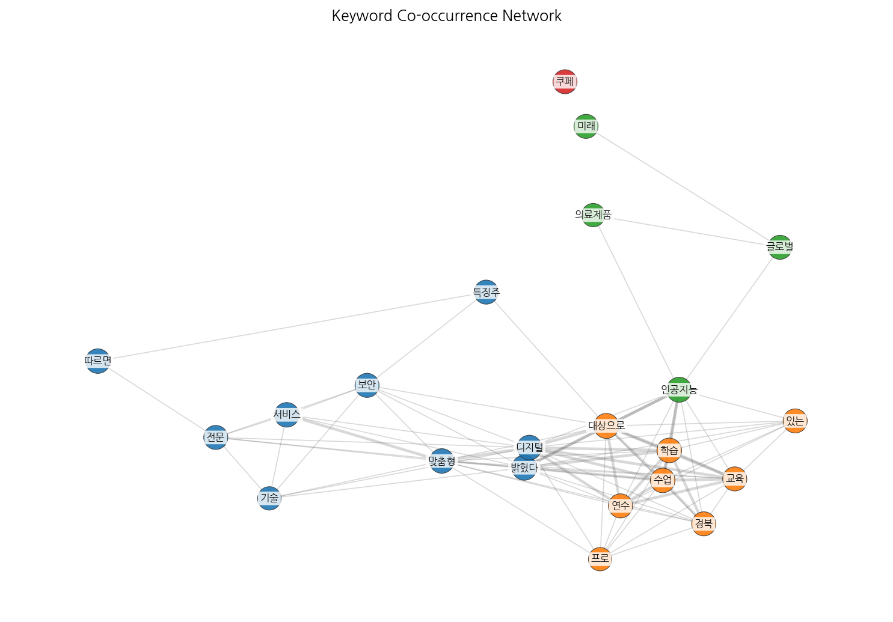
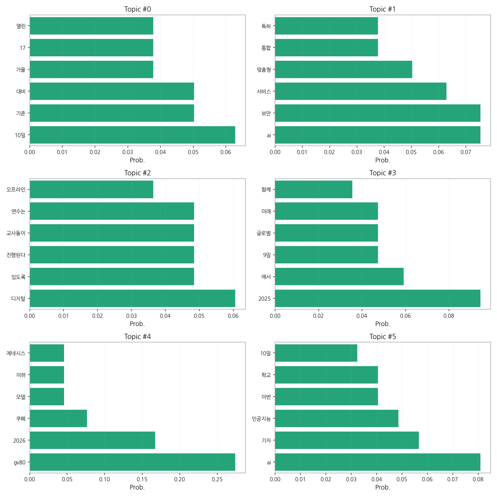

1) 상위 토픽을 3개 주제로 묶어 핵심 맥락을 설명하면 다음과 같습니다. 첫째, 자동차 업계의 변화와 미래 전망은 제네시스 GV80 쿠페 출시(topic 4)와 2025년 이후 글로벌 자동차 시장의 미래 전략(topic 3)을 다룹니다. 둘째, AI 기술의 발전과 활용은 AI 기반 보안 서비스(topic 1), AI 기자 및 인공지능 교육(topic 5) 등 다양한 분야에서의 AI 적용을 보여줍니다. 셋째, 교육 및 디지털 전환은 디지털 기반의 교사 연수(topic 2)를 통해 교육 현장의 디지털 전환을 강조합니다. 이 세 가지 주제는 기술 발전과 사회 변화에 대한 뉴스의 주요 관심사를 반영합니다.
2) 최근 변화/스파이크를 짚어보면, 9월 8일과 9월 10일 사이에 기사 수가 급증했습니다. 이는 특정 이벤트 또는 뉴스 발표에 따른 집중적인 보도를 시사하며, 추가적인 정보 분석을 통해 그 원인을 파악할 필요가 있습니다.
3) 실무 인사이트 3가지:

| Rank | Keyword | Score |
|---|---|---|
| 1 | 교육 | 3.840 |
| 2 | 디지털 | 3.380 |
| 3 | 보안 | 2.756 |
| 4 | 밝혔다 | 2.704 |
| 5 | 대상으로 | 2.499 |
| 6 | 경북 | 2.464 |
| 7 | 프로 | 2.211 |
| 8 | 서비스 | 2.197 |
| 9 | 미래 | 2.181 |
| 10 | 글로벌 | 2.164 |
| 11 | 인공지능 | 2.137 |
| 12 | 연수 | 1.948 |
| 13 | 특징주 | 1.920 |
| 14 | 있는 | 1.914 |
| 15 | 의료제품 | 1.887 |



1) 상위 토픽을 3개 주제로 묶어 핵심 맥락을 설명하면 다음과 같습니다. 첫째, 자동차 업계의 변화와 미래 전망은 제네시스 GV80 쿠페 출시(topic 4)와 2025년 이후 글로벌 자동차 시장의 미래 전략(topic 3)을 다룹니다. 둘째, AI 기술의 발전과 활용은 AI 기반 보안 서비스(topic 1), AI 기자 및 인공지능 교육(topic 5) 등 다양한 분야에서의 AI 적용을 보여줍니다. 셋째, 교육 및 디지털 전환은 디지털 기반의 교사 연수(topic 2)를 통해 교육 현장의 디지털 전환을 강조합니다. 이 세 가지 주제는 기술 발전과 사회 변화에 대한 뉴스의 주요 관심사를 반영합니다.
2) 최근 변화/스파이크를 짚어보면, 9월 8일과 9월 10일 사이에 기사 수가 급증했습니다. 이는 특정 이벤트 또는 뉴스 발표에 따른 집중적인 보도를 시사하며, 추가적인 정보 분석을 통해 그 원인을 파악할 필요가 있습니다.
3) 실무 인사이트 3가지:
| Idea | Target | Value Prop | Score |
|---|---|---|---|
| AI 기반 자동차 교육 플랫폼 | 자동차 정비/수리 업체, 자동차 관련 교육기관, 자동차 제조사의 교육 담당 부서 (중소기업~대기업) | AI 기반 시뮬레이션 및 가상현실(VR) 기술을 활용하여 실제와 유사한 환경에서 교육을 제공합니다. 개인별 맞춤형 학습 경로를 제공하고, 실시간 피드백을 통해 학습 효과를 극대화합니다. 최신 기술 동향을 반영한 교육 콘텐츠를 지속적으로 업데이트합니다. | 4.50 |
| AI 기반 자동차 보안 서비스 | 자동차 제조사, 자동차 보험회사, 개인 운전자 (대기업, 중소기업, 개인) | AI 기반 머신러닝 알고리즘을 활용하여 차량의 이상 징후를 실시간으로 감지하고, 사이버 공격을 예방합니다. 개인 맞춤형 보안 설정 및 위협 수준에 따른 알림 기능을 제공하며, 사고 발생 시 신속한 대응을 지원합니다. | 4.20 |
| AI 기반 교사 연수 플랫폼 | 교육청, 학교, 교육 관련 기관 (공공기관, 교육기관) | AI 기반 개인 맞춤형 학습 플랫폼을 통해 교사들의 디지털 역량을 강화합니다. 다양한 디지털 교육 콘텐츠와 실습 기회를 제공하고, 학습 성과를 실시간으로 분석하여 개선 방향을 제시합니다. | 4.00 |
| 자동차 미래 전략 컨설팅 서비스 | 자동차 부품 제조사, 자동차 판매 및 정비 업체, 자동차 관련 스타트업 (중소기업~대기업) | 자동차 시장 분석 및 미래 전망에 대한 전문적인 컨설팅 서비스를 제공합니다. 시장 트렌드 분석, 경쟁사 분석, 기술 동향 분석을 통해 최적의 미래 전략을 수립하고 실행을 지원합니다. | 3.80 |
| 자동차 애프터마켓 AI 기반 예측 정비 서비스 | 자동차 정비 업체, 자동차 소유주 (중소기업~대기업, 개인) | AI 기반 머신러닝을 통해 차량의 고장을 예측하고, 소비자에게는 예방 정비를 권장하여 불편과 비용을 줄여줍니다. 정비 업체는 예측된 수요에 맞춰 효율적인 운영을 할 수 있습니다. | 3.50 |